- 00 学习指南 如何学习这门编译原理实战课？.md.html
- 00 开篇词 在真实世界的编译器中游历.md.html
- 01 编译的全过程都悄悄做了哪些事情？.md.html
- 02 词法分析：用两种方式构造有限自动机.md.html
- 03 语法分析：两个基本功和两种算法思路.md.html
- 04 语义分析：让程序符合语义规则.md.html
- 05 运行时机制：程序如何运行，你有发言权.md.html
- 06 中间代码：不是只有一副面孔.md.html
- 07 代码优化：跟编译器做朋友，让你的代码飞起来.md.html
- 08 代码生成：如何实现机器相关的优化？.md.html
- 09 Java编译器（一）：手写的编译器有什么优势？.md.html
- 10 Java编译器（二）：语法分析之后，还要做些什么？.md.html
- 11 Java编译器（三）：属性分析和数据流分析.md.html
- 12 Java编译器（四）：去除语法糖和生成字节码.md.html
- 13 Java JIT编译器（一）：动手修改Graal编译器.md.html
- 14 Java JIT编译器（二）：Sea of Nodes为何如此强大？.md.html
- 15 Java JIT编译器（三）：探究内联和逃逸分析的算法原理.md.html
- 16 Java JIT编译器（四）：Graal的后端是如何工作的？.md.html
- 17 Python编译器（一）：如何用工具生成编译器？.md.html
- 18 Python编译器（二）：从AST到字节码.md.html
- 19 Python编译器（三）：运行时机制.md.html
- 20 JavaScript编译器（一）：V8的解析和编译过程.md.html
- 21 JavaScript编译器（二）：V8的解释器和优化编译器.md.html
- 22 Julia编译器（一）：如何让动态语言性能很高？.md.html
- 23 Julia编译器（二）：如何利用LLVM的优化和后端功能？.md.html
- 24 Go语言编译器：把它当作教科书吧.md.html
- 25 MySQL编译器（一）：解析一条SQL语句的执行过程.md.html
- 26 MySQL编译器（二）：编译技术如何帮你提升数据库性能？.md.html
- 27 课前导读：学习现代语言设计的正确姿势.md.html
- 28 前端总结：语言设计也有人机工程学.md.html
- 29 中端总结：不遗余力地进行代码优化.md.html
- 30 后端总结：充分发挥硬件的能力.md.html
- 31 运行时（一）：从0到语言级的虚拟化.md.html
- 32 运行时（二）：垃圾收集与语言的特性有关吗？.md.html
- 33 并发中的编译技术（一）：如何从语言层面支持线程？.md.html
- 34 并发中的编译技术（二）：如何从语言层面支持协程？.md.html
- 35 并发中的编译技术（三）：Erlang语言厉害在哪里？.md.html
- 36 高级特性（一）：揭秘元编程的实现机制.md.html
- 37 高级特性（二）：揭秘泛型编程的实现机制.md.html
- 38 综合实现（一）：如何实现面向对象编程？.md.html
- 39 综合实现（二）：如何实现函数式编程？.md.html
- 40 成果检验：方舟编译器的优势在哪里？.md.html
- 不定期加餐1 远程办公，需要你我具备什么样的素质？.md.html
- 不定期加餐2 学习技术的过程，其实是训练心理素质的过程.md.html
- 不定期加餐3 这几年，打动我的两本好书.md.html
- 不定期加餐4 从身边的牛人身上，我学到的一些优秀品质.md.html
- 不定期加餐5 借助实例，探究C++编译器的内部机制.md.html
- 划重点 7种编译器的核心概念与算法.md.html
- 期末答疑与总结 再次审视学习编译原理的作用.md.html
- 热点问题答疑 如何吃透7种真实的编译器？.md.html
- 用户故事 易昊：程序员不止有Bug和加班，还有诗和远方.md.html
- 知识地图 一起来复习编译技术核心概念与算法.md.html
- 结束语 实战是唯一标准！.md.html
- 捐赠
34 并发中的编译技术（二）：如何从语言层面支持协程？
你好，我是宫文学。
上一讲我们提到了线程模式是当前计算机语言支持并发的主要方式。
不过，在有些情况下，线程模式并不能满足要求。当需要运行大量并发任务的时候，线程消耗的内存、线程上下文切换的开销都太大。这就限制了程序所能支持的并发任务的数量。
在这个背景下，一个很“古老”的技术重新焕发了青春，这就是协程（Coroutine）。它能以非常低的代价、友好的编程方式支持大量的并发任务。像Go、Python、Kotlin、C#等语言都提供了对协程的支持。
今天这一讲，我们就来探究一下如何在计算机语言中支持协程的奇妙功能，它与编译技术又是怎样衔接的。
首先，我们来认识一下协程。
协程（Coroutine）的特点与使用场景
我说协程“古老”，是因为这个概念是在1958年被马尔文 · 康威（Melvin Conway）提出来、在20世纪60年代又被高德纳（Donald Ervin Knuth）总结为两种子过程（Subroutine）的模式之一。一种是我们常见的函数调用的方式，而另一种就是协程。在当时，计算机的性能很低，完全没有现代的多核计算机。而采用协程就能够在这样低的配置上实现并发计算，可见它是多么的轻量级。
有的时候，协程又可能被称作绿色线程、纤程等，所采用的技术也各有不同。但总的来说，它们都有一些共同点。
首先，协程占用的资源非常少。你可以在自己的笔记本电脑上随意启动几十万个协程，而如果你启动的是几十万个线程，那结果就是不可想象的。比如，在JVM中，缺省会为每个线程分配1MB的内存，用于线程栈等。这样的话，几千个线程就要消耗掉几个GB的内存，而几十万个线程理论上需要消耗几百GB的内存，这还没算程序在堆中需要申请的内存。当然，由于底层操作系统和Java应用服务器的限制，你也无法启动这么多线程。
其次，协程是用户自己的程序所控制的并发。也就是说，协程模式，一般是程序交出运行权，之后又被另外的程序唤起继续执行，整个过程完全是由用户程序自己控制的。而线程模式就完全不同了，它是由操作系统中的调度器（Scheduler）来控制的。
我们看个Python的例子：
def running_avg():
total = 0.0
count = 0
avg = 0
while True:
num = yield avg
total += num
count += 1
avg = total/count
#生成协程，不会有任何输出
ra = running_avg()
#运行到yield
next(ra)
print(ra.send(2))
print(ra.send(3))
print(ra.send(4))
print(ra.send(7))
print(ra.send(9))
print(ra.send(11))
#关掉协程
ra.close
可以看到，使用协程跟我们平常使用函数几乎没啥差别，对编程人员很友好。实际上，它可以认为是跟函数并列的一种子程序形式。和函数的区别是，函数调用时，调用者跟被调用者之间像是一种上下级的关系；而在协程中，调用者跟被调用者更像是互相协作的关系，比如一个是生产者，一个是消费者。这也是“协程”这个名字直观反映出来的含义。
我们用一张图来对比下函数和协程中的调用关系。
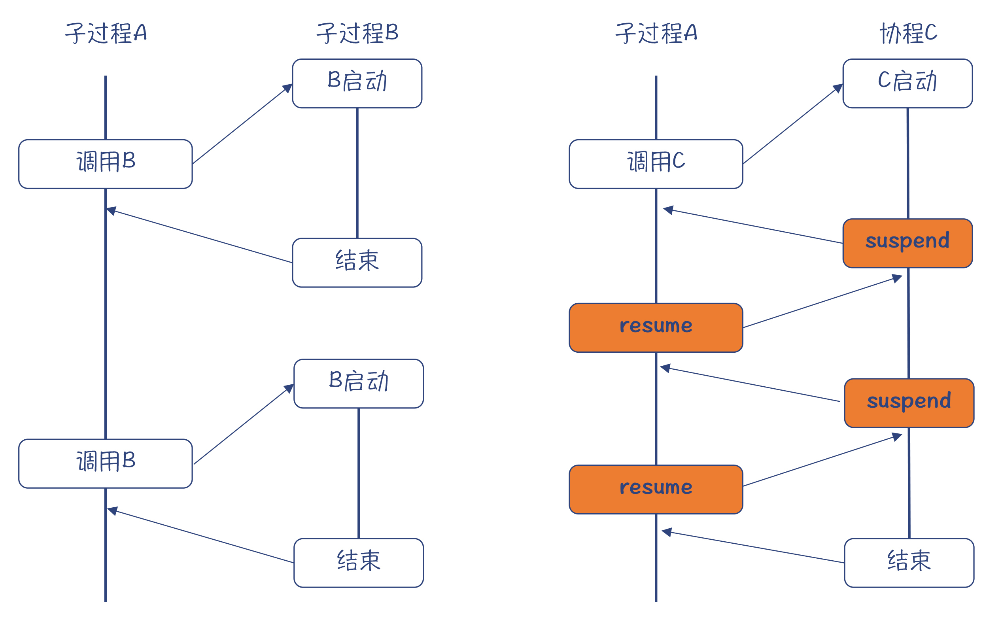
图1：函数（左）与协程（右）的控制流
细想一下，编程的时候，这种需要子程序之间互相协作的场景有很多，我们一起看两种比较常见的场景。
第一种比较典型的场景，就是生产者和消费者模式。如果你用过Unix管道或者消息队列编程的话，会非常熟悉这种模式。但那是在多个进程之间的协作。如果用协程的话，在一个进程内部就能实现这种协作，非常轻量级。
就拿编译器前端来说，词法分析器（Tokenizer）和语法分析器（Parser）就可以是这样的协作关系。也就是说，为了更好的性能，没有必要一次把词法分析完毕，而是语法分析器消费一个，就让词法分析器生产一个。因此，这个过程就没有必要做成两个线程了，否则就太重量级了。这种场景，我们可以叫做生成器（Generator）场景：主程序调用生成器，给自己提供数据。
特别适合使用协程的第二种场景是IO密集型的应用。比如做一个网络爬虫同时执行很多下载任务，或者做一个服务器同时响应很多客户端的请求，这样的任务大部分时间是在等待网络传输。
如果用同步阻塞的方式来做，一个下载任务在等待的时候就会把整个线程阻塞掉。而用异步的方式，协程在发起请求之后就把控制权交出，调度程序接收到数据之后再重新激活协程，这样就能高效地完成IO操作，同时看上去又是用同步的方式编程，不需要像异步编程那样写一大堆难以阅读的回调逻辑。
这样的场景在微服务架构的应用中很常见，我们来简化一个实际应用场景，分析下如何使用协程。
在下面的示例中，应用A从客户端接收大量的并发请求，而应用A需要访问应用B的服务接口，从中获得一些信息，然后返回给客户端。
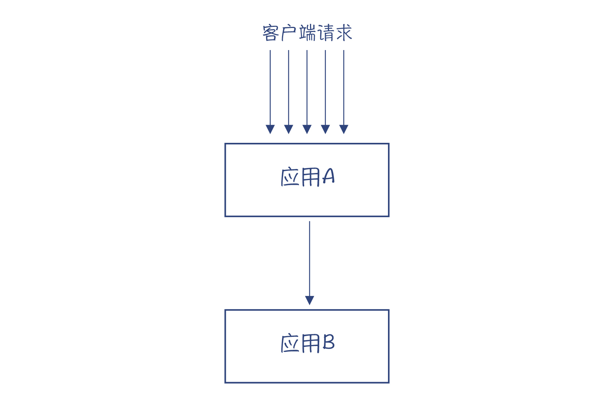
图2：应用间通讯的场景
要满足这样的场景，我们最容易想到的就是，编写同步通讯的程序，其实就是同步调用。
假设应用A对于每一个客户端的请求，都会起一个线程做处理。而你呢，则在这个线程里发起一个针对应用B的请求。在等待网络返回结果的时候，当前线程会被阻塞住。
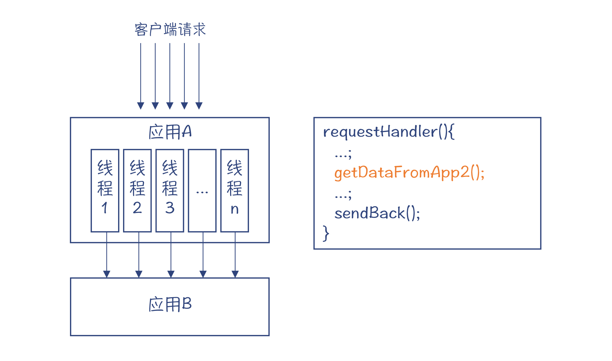
图3：采用同步编程实现应用间的通讯
这个架构是最简单的，你如果采用Java的Servlet容器来编写程序的话，很可能会采用这个结构。但它有一些缺陷：
- 对于每个客户端请求，都要起一个线程。如果请求应用B的时延比较长，那么在应用A里会积压成千上万的线程，从而浪费大量的服务器资源。而且，当线程超过一定数量，应用服务器就会拒绝后续的请求。
- 大量的请求毫无节制地涌向应用B，使得应用B难以承受负载，从而导致响应变慢，甚至宕机。
因为同步调用的这种缺点，近年来异步编程模型得到了更多的应用，典型的就是Node.js。在异步编程模型中，网络通讯等IO操作不必阻塞线程，而是通过回调来让主程序继续执行后续的逻辑。
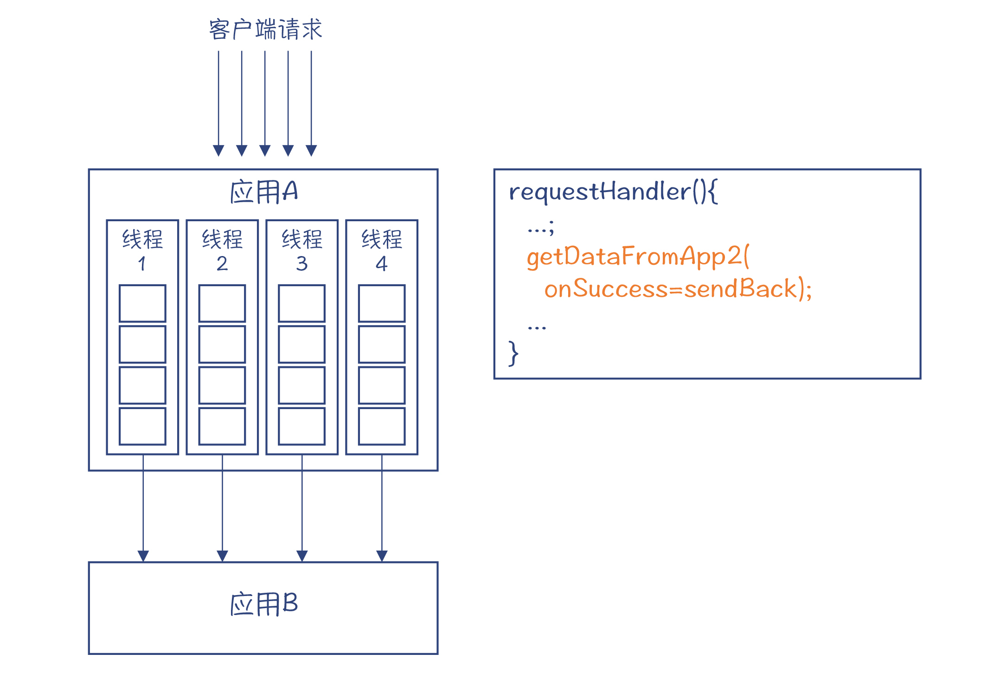
图4：使用异步编程实现应用间通讯
上图中，我们只用到了4个线程，对应操作系统的4个真线程，可以减少线程切换的开销。在每个线程里，维护一个任务队列。首先，getDataFromApp2()会被放到任务队列；当数据返回以后，系统的调度器会把sendBack()函数放进任务队列。
这个例子比较简单，只有一层回调，你还能读懂它的逻辑。但是，采用这种异步编程模式，经常会导致多层回调，让代码很难阅读。这种现象，被叫做“回调地狱（Callback Hell）”。
这时候，就显示出协程的优势了。协程可以让你用自己熟悉的命令式编程的风格，来编写异步的程序。比如，对于上面的示例程序，用协程可以这样写，看上去跟编写同步调用的代码没啥区别。
requestHandler(){
...;
await getDataFromApp2();
...;
sendBack();
}
当然，我要强调一下，在协程用于同步和异步编程的时候，其调度机制是不同的。跟异步编程配合的时候，要把异步IO机制与协程调度机制关联起来。
好了，现在你已经了解了协程的特点和适用场景。那么问题来了，如何让一门语言支持协程呢？要回答这个问题，我们就要先学习一下协程的运行原理。
协程的运行原理
当我们使用函数的时候，简单地保持一个调用栈就行了。当fun1调用fun2的时候，就往栈里增加一个新的栈帧，用于保存fun2的本地变量、参数等信息；这个函数执行完毕的时候，fun2的栈帧会被弹出（恢复栈顶指针sp），并跳转到返回地址（调用fun2的下一条指令），继续执行调用者fun1的代码。
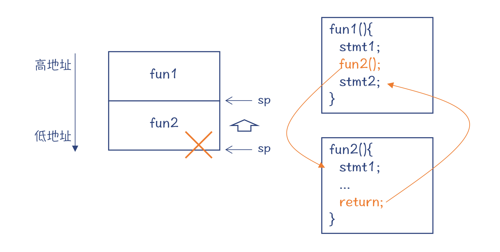
图5：调用函数时的控制流和栈桢管理
但如果调用的是协程coroutine1，该怎么处理协程的栈帧呢？因为协程并没有执行完，显然还不能把它简单地丢掉。
这种情况下，程序可以从堆里申请一块内存，保存协程的活动记录，包括本地变量的值、程序计数器的值（当前执行位置）等等。这样，当下次再激活这个协程的时候，可以在栈帧和寄存器中恢复这些信息。
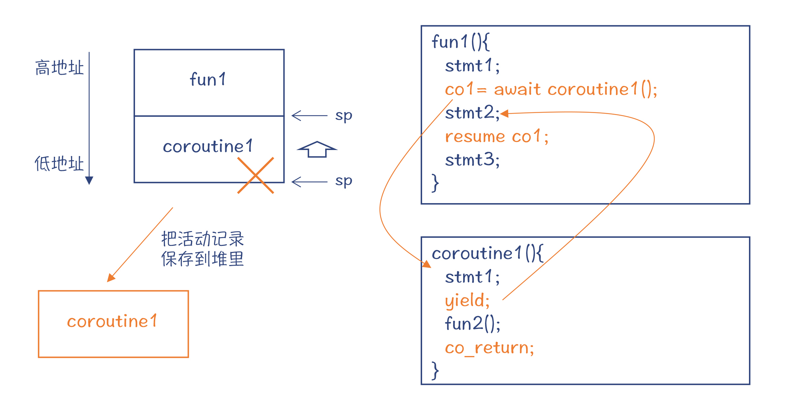
图6：调用协程时的控制流和栈桢管理
把活动记录保存到堆里，是不是有些眼熟？其实，这有点像闭包的运行机制。
程序在使用闭包的时候，也需要在堆里保存闭包中的自由变量的信息，并且在下一次调用的时候，从堆里恢复。只不过，闭包不需要保存本地变量，只保存自由变量就行了；也不需要保存程序计数器的值，因为再一次调用闭包函数的时候，还是从头执行，而协程则是接着执行yield之后的语句。
fun1通过resume语句，让协程继续运行。这个时候，协程会去调用一个普通函数fun2，而fun2的栈帧也会加到栈上。
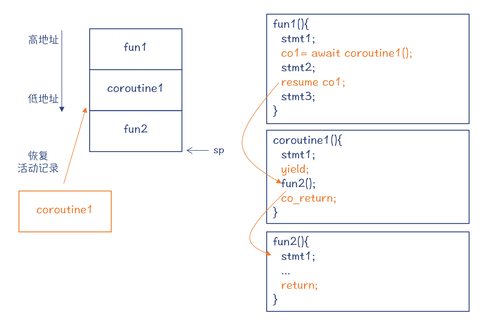
图7：在协程里调用普通函数时的栈桢情况
如果fun2执行完毕，那么就会返回到协程。而协程也会接着执行下一个语句，这个语句是一个专门针对协程的返回语句，我们叫它co_return吧，以便区别于传统的return。在执行了co_return以后，协程就结束了，无法再resume。这样的话，保存在堆里的活动记录也就可以销毁了。
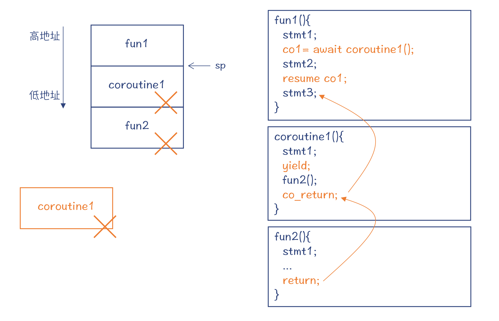
图8：协程结束时对栈桢的处理
通过上面的例子，你应该已经了解了协程的运行原理。那么我们学习编译原理会关心的问题是：实现协程的调度，包括协程信息的保存与恢复、指令的跳转，需要编译器的帮忙吗？还是用一个库就可以实现？
实际上，对于C和C++这样的语言来说，确实用一个库就可以实现。因为C和C++比较灵活，比如可以用setjmp、longjmp等函数，跨越函数的边界做指令的跳转。但如果用库实现，通常要由程序管理哪些状态信息需要被保存下来。为此，你可能要专门设计一个类型，来参与实现协程状态信息的维护。
而如果用编译器帮忙，那么就可以自动确定需要保存的协程的状态信息，并确定需要申请的内存大小。一个协程和函数的区别，就仅仅在于是否使用了yield和co_return语句而已，减轻了程序员编程的负担。
好了，刚才我们讨论了，在实现协程的时候，要能够正确保存协程的活动记录。在具体实现上，有Stackful和Stackless两种机制。采用不同的机制，对于协程能支持的特性也很有关系。所以接下来，我带你再进一步地分析一下Stackful和Stackless这两种机制。
Stackful和Stackless的协程
到目前为止，看上去协程跟普通函数（子程序）的差别也不大嘛，你看：
- 都是由一个主程序调用，运行一段时间以后再把控制流交回给主程序；
- 都使用栈来管理本地变量和参数等信息，只不过协程在没有完全运行完毕时，要用堆来保存活动记录；
- 在协程里也可以调用其他的函数。
可是，在有的情况下，我们没有办法直接在coroutine1里确定是否要暂停线程的执行，可能需要在下一级的子程序中来确定。比如说，coroutine1函数变得太大，我们重构后，把它的功能分配到了几个子程序中。那么暂停协程的功能，也会被分配到子程序中。
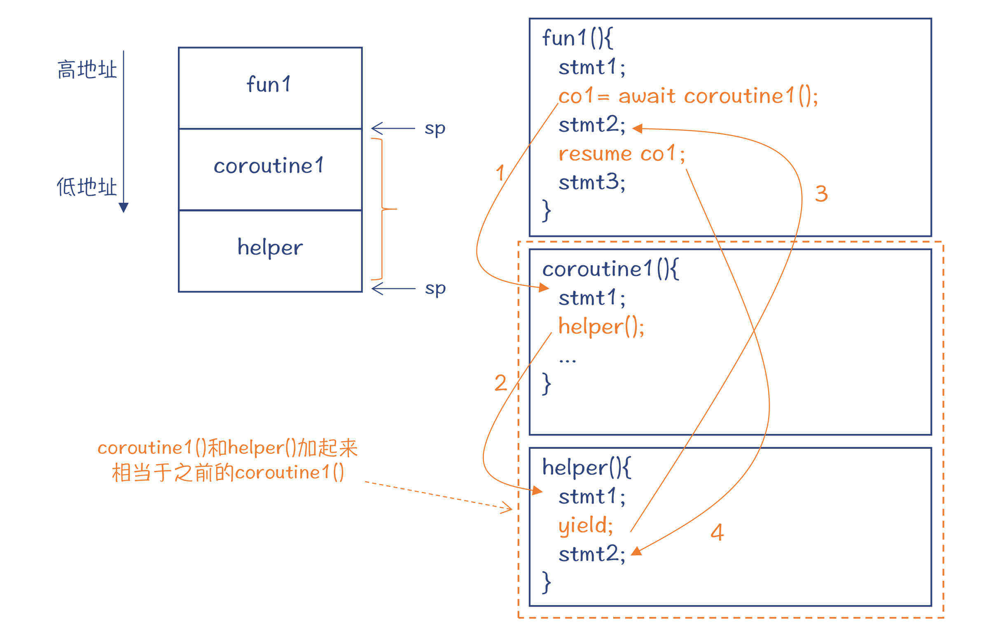
图9：在辅助函数里暂停协程时的控制流和栈桢情况
这个时候，在helper()中暂停协程，会让控制流回到fun1函数。而当在fun1中调用resume的时候，控制流应该回到helper()函数中yield语句的下一条，继续执行。coroutine1()和helper()加在一起，起到了跟原来只有一个coroutine1()一样的效果。
这个时候，在栈里不仅要加载helper()的活动记录，还要加载它的上一级，也就是coroutine1()的活动记录，这样才能维护正确的调用顺序。当helper()执行完毕的时候，控制流会回到coroutine1()，继续执行里面的逻辑。
在这个场景下，不仅要从堆里恢复多个活动记录，还要维护它们之间的正确顺序。上面的示例中，还只有两级调用。如果存在多级的调用，那就更麻烦了。
那么，怎么解决这个技术问题呢？你会发现，其实协程的逐级调用过程，形成了自己的调用栈，这个调用栈需要作为一个整体来使用，不能拆成一个个单独的活动记录。
既然如此，那我们就加入一个辅助的运行栈好了。这个栈通常被叫做Side Stack。每个协程，都有一个自己专享的协程栈。
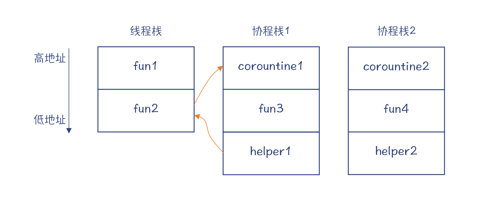
图10：协程的Side Stack
好了，现在是时候给你介绍两个术语了：这种需要一个辅助的栈来运行协程的机制，叫做Stackful Coroutine；而在主栈上运行协程的机制，叫做Stackless Coroutine。
对于Stackless的协程来说，只能在顶层的函数里把控制权交回给调用者。如果这个协程调用了其他函数或者协程，必须等它们返回后，才能去执行暂停协程的操作。从这种角度看，Stackless的特征更像一个函数。
而对于Stackful的协程来说，可以在协程栈的任意一级，暂停协程的运行。从这个角度看，Stackful的协程像是一个线程，不管有多少级的调用，随时可以让这个协程暂停，交出控制权。
除此之外，我们再仔细去想，因为设计上的不同，Stackless和Stackful的协程其实还会产生其他的差别：
- Stackless的协程用的是主线程的栈，也就是说它基本上会被绑定在创建它的线程上了。而Stackful的协程，可以从一个线程脱离，附加到另一个线程上。
- Stackless的协程的生命周期，一般来说受制于它的创建者的生命周期。而Stackful的协程的生命周期，可以超过它的创建者的生命周期。
好了，以上就是对Stackless和Stackful的协程的概念和区别了。其实，对于协程，我们可能还会听说一种分类方法，就是对称的和非对称的。
到目前为止，我们讲到的协程都是非对称的。有一个主程序，而协程像是子程序。主程序和子程序控制程序执行的原语是不同的，一个用于激活协程，另一个用于暂停协程。而对称的协程，相互之间是平等的关系，它们使用相同的原语在协程之间移交控制权。
那么，C++、Python、Java、JavaScript、Julia和Go这些常见语言中，哪些是支持协程的？是Stackless的 ，还是Stackful的？是对称的，还是非对称的？需要编译器做什么配合？
接下来，我们就一起梳理下。
不同语言的协程实现和差异
C++语言的协程实现
今年发布的C++20标准中，增加了协程特性。标准化组织经过长期的讨论，采用了微软的Stackless模式。采纳的原因也比较简单，就是因为它实现起来简单可靠，并且已经在微软有多年的成熟运行的经验了。
在这个方案里，采用了co_await、co_yield和co_return三个新的关键字让程序员使用协程，并在编译器层面给予了支持。
而我们说过，C和C++的协程功能，只用库也可以实现。其中，腾讯的微信团队就开源了一套协程库，叫做libco。这个协程库是支撑微信背后海量并发调用的基础。采用这个协程库，单机竟然可以处理千万级的连接！
并且，libco还做了一点创新。因为libco是Stackful的，对每个协程都要分配一块栈空间，在libco中给每个协程分配的是128KB。那么，1千万协程就需要1.2TB的内存，这样服务器的内存就会成为资源瓶颈。所以，libco发明了共享栈的机制：当一个协程不用栈的时候，把里面的活动记录保存到协程私有的内存中，把协程栈腾出来给其他协程使用。一般来说，一个活动记录的大小要远小于128KB，所以总体上节省了内存。
另外，libco还跟异步通讯机制紧密整合，实现了用同步的编程风格来实现异步的功能，使得微信后台的处理能力大大提升。微信后台用协程做升级的案例，你可以看看这篇文章。
接下来，我们说说Python语言的协程实现。
Python语言的协程实现
我们前面讲协程的运行原理用的示例程序，就是用Python写的。这是Python的一种协程的实现，支持的是同步处理，叫做generator模式。3.4版本之后，Python支持一种异步IO的协程模式，采用了async/await关键字，能够以同步的语法编写异步程序。
总体来说，Python是一种解释型的语言，而且内部所有成员都是对象，所以实现协程的机制是很简单的，保存协程的执行状态也很容易。只不过，你不可能把Python用于像刚才微信那样高并发的场景，因为解释型语言对资源的消耗太高了。尽管如此，在把Python当作脚本语言使用的场景中，比如编写网络爬虫，采用它提供的协程加异步编程的机制，还是能够带来很多好处的。
我们再来说说Java和JavaScript语言的协程实现。
Java的协程实现
其实，Java原生是不支持协程的，但是也有几种方法可以让Java支持协程：
- 方法1：给虚拟机打补丁，从底层支持协程。
- 方法2：做字节码操纵，从而改变Java缺省的控制流执行方式，并保存协程的活动记录。
- 方法3：基于JNI。比如，C语言可以实现协程，然后再用JNI去调用C语言实现的功能。
- 方法4：把线程封装成协程。这种实现技术太过于重量级，因为没有体现出协程占据资源少的优点。
现在有一些第三方库实现了协程功能，基本上都是基于方法2，也就是做字节码操纵。目前还没有哪一个库被广泛接受。如果你不想冒险的话，可能还是要等待官方的实现了。
JavaScript中的协程
JavaScript从ES6（ECMAScript 6.0）引入了generator功能，ES7引入了支持异步编程的async/await。由于JavaScript本来就非常重视异步编程，所以协程的引入，会让异步编程变得更友好。
Julia和Go语言的协程实现
Julia语言的协程机制，跟以上几种语言都不同。它提供的是对称的协程机制。多个协程可以通过channel通讯，当从channel里取不出信息时，或者channel已满不能再发信息时，自然就停下来了。
当我谈到channel的时候，熟悉Go语言的同学马上就会想到Goroutine。Goroutine是Go语言的协程机制，也是用channel实现协程间的协作的。
我把对Go语言协程机制的介绍放在最后，是因为Goroutine实在是很强大。我觉得，所有对并发编程有兴趣的同学，都要看一看Goroutine的实现机制，都会得到很大的启发。
我的感受是，Goroutine简直是实现轻量级并发功能的集大成者，几乎考虑到了你能想到的所有因素。介绍Goroutine的文章有很多，我就不去重复已有的内容了，你可以看看“How Stacks are Handled in Go”这篇文章。现在，我就顺着本讲的知识点，对Goroutine的部分特点做一点介绍。
首先我们来看一下，Goroutine是Stackful还是Stackless？答案是Stackful的。就像我们前面已经总结过的，Stackful协程的特点主要是两点：协程的生命周期可以超过其创建者，以及协程可以从一个线程转移到另一个线程。后者在Goroutine里特别有用。当一个协程调用了一个系统功能，导致线程阻塞的时候，那么排在这条线程上的其他Goroutine岂不是也要被迫等待？为了避免这种尴尬，Goroutine的调度程序会把被阻塞的线程上的其他Goroutine迁移到其他线程上。
我们讲libco的时候还讲过，Stackful的缺点是要预先分配比较多的内存用作协程的栈空间，比如libco要为每个协程分配128K的栈。而Go语言只需要为每个Goroutine分配2KB的栈。你可能会问了，万一空间不够了怎么办，不会导致内存访问错误吗？
不会的。Go语言的函数在运行的时候，会有一小块序曲代码，用来检查栈空间够不够用。如果不够用，就马上申请新的内存。需要注意的是，像这样的机制，必须有编译器的配合才行，编译器可以为每个函数生成这样的序曲代码。如果你用库来实现协程，就无法实现这样的功能。
通过这个例子，你也可以体会到把某个特性做成语言原生的，以及用库去实现的差别。
我想说的Go语言协程机制的第二个特点，就是channel机制。channel提供了Goroutine之间互相通讯，从而能够协调行为的机制。Go语言的运行时保证了在同一个时刻，只有一个Goroutine能够读写channel，这就避免了我们前一讲提到的，用锁来保证多个线程访问共享数据的难题。当然，channel在底层也采用了锁的机制，毕竟现在不需要程序员去使用这么复杂且容易出错的机制了。
Go语言协程机制的第三个特点，是关于协程的调度时机。今天这一讲，我们其实看到了两种调度时机：对于generator类型的协程，基本上是同步调度的，协程暂停以后，控制立即就回到主程序；第二个调度机制，是跟异步IO机制配合。
而我关心的，是能否实现像线程那样的抢占式（preemptive）的调度。操作系统的线程调度器，在进行调度的时候，可以不管当前线程运行到了什么位置，直接中断它的运行，并把相关的寄存器的值保存下来，然后去运行另一个线程。这种抢占式的调度的一个最大的好处，是不会让某个程序霸占CPU资源不放，而是公平地分配给各个程序。而协程也存在着类似的问题。如果一个协程长时间运行，那么排在这条线程上的其他协程，就被剥夺了运行的机会。
Goroutine在解决这个问题上也做了一些努力。比如，在下面的示例程序中，foo函数中的循环会一直运行。这时候，编译器就可以在bar()函数的序曲中，插入一些代码，检查当前协程是否运行时间太久，从而主动让出控制权。不过，如果bar()函数被内联了，处理方式就要有所变化。但总的来说，由于有编译器的参与，这种类似抢占的逻辑是可以实现的。
func foo(){
while true{
bar(); //可以在bar函数的序曲中做检查。
}
}
在Goroutine实现了各种丰富的调度机制以后，它已经变得不完全由用户的程序来主导协程的调度了，而是能够更加智能、更加优化地实现协程的调度，由操作系统的线程调度器、Go语言的调度器和用户程序三者配合实现。这也是Go语言的一个重要优点。
那么，我们从C、C++、Python、Java、JavaScript、Julia和Go语言中，就能总结出协程实现上的特点了：
- 除了Julia和Go，其他语言采用的都是非对称的协程机制。Go语言是采用协程最彻底的。在采用了协程以后，已经不需要用过去的线程。
- 像C++、Go这样编译成机器码执行的语言，对协程栈的良好管理，能够大大降低内存占用，增加支持的协程的数量。
- 协程与异步IO结合是一个趋势。
课程小结
今天这一讲，我们学习了协程的定义、使用场景、实现原理和不同语言的具体实现机制。我们特别从编译技术的角度，关注了协程对栈的使用机制，看看它与传统的程序有什么不同。
在这个过程中，一方面，你会通过今天的课程对协程产生深入的认识；另一方面，你会更加深刻地认识到编译技术是如何跟语言特性的设计和运行时紧密配合的。
协程可以用库实现，也可以借助编译技术成为一门语言的原生特性。采用编译技术，能帮助我们自动计算活动记录的大小，实现自己独特的栈管理机制，实现抢占式调度等功能。
本讲的思维导图我也放在了下面，供你参考：
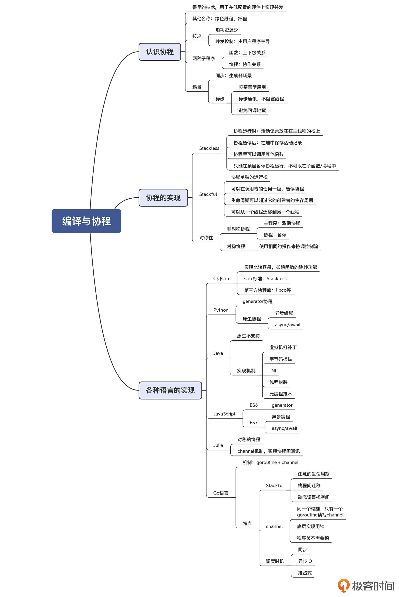
一课一思
上一讲我们讨论的是线程模式。我们知道，当并发访问量非常大的时候，线程模式消耗的资源会太多。那么你会如何解决这个问题？是否会采用协程？如果你使用的是Java语言，其原生并不支持协程，你会怎么办？欢迎发表你的观点。
参考资料
- How Stacks are Handled in Go，这篇文章介绍了Goroutine使用栈的机制，你可以看看它是如何很节约地使用内存的。
- Coroutines in Java，这篇文章探讨了在Java中实现协程的各种技术考虑。
© 2019 - 2023 Liangliang Lee. Powered by gin and hexo-theme-book.